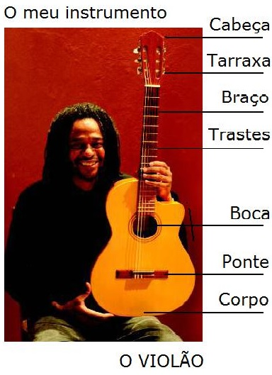

"Jorge L A Matheus Voz Violão"
"Afinando o Instrumento"
"Dó Maior e Lá Menor"
"Fá Maior e Ré Menor"
Fill out my
online form
.
Voltar para
Jorge Luis Aparecido Matheus
Tweets de @jorgelamatheus
Copyleft © 2018-19-20-21